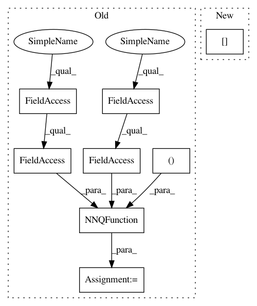

8e6fc06cc156510d37decf430cf3df0853285779,softlearning/value_functions/utils.py,,get_Q_function_from_variant,#Any#Any#,4
Before Change
def get_Q_function_from_variant(variant, env):
layer_size = variant["value_fn_params"]["layer_size"]
Qs = tuple(
NNQFunction(
observation_shape=env.observation_space.shape,
action_shape=env.action_space.shape,
hidden_layer_sizes=(layer_size, layer_size),
name="qf{}".format(i))
for i in range(2))
return Qs
After Change
def get_Q_function_from_variant(variant, env):
Q_params = variant["Q_params"]
Q_function = Q_FUNCTION_FUNCTIONS[Q_params["type"]](variant, env)
return Q_function
In pattern: SUPERPATTERN
Frequency: 3
Non-data size: 8
Instances
Project Name: rail-berkeley/softlearning
Commit Name: 8e6fc06cc156510d37decf430cf3df0853285779
Time: 2018-10-19
Author: hartikainen@berkeley.edu
File Name: softlearning/value_functions/utils.py
Class Name:
Method Name: get_Q_function_from_variant
Project Name: rail-berkeley/softlearning
Commit Name: 7856d22b09561e33522bdc0bd00218ae75b84bd7
Time: 2018-09-09
Author: kristian.hartikainen@gmail.com
File Name: examples/mujoco_all_ray.py
Class Name:
Method Name: run_experiment
Project Name: rail-berkeley/softlearning
Commit Name: 7856d22b09561e33522bdc0bd00218ae75b84bd7
Time: 2018-09-09
Author: kristian.hartikainen@gmail.com
File Name: examples/mujoco_all_sac.py
Class Name:
Method Name: run_experiment
Project Name: rail-berkeley/softlearning
Commit Name: 8e6fc06cc156510d37decf430cf3df0853285779
Time: 2018-10-19
Author: hartikainen@berkeley.edu
File Name: softlearning/value_functions/utils.py
Class Name:
Method Name: get_Q_function_from_variant